← 返回阅读库 · 原论文目录
论文讲解阅读文档 · 新模型 · v054
DeepLab: Semantic Image Segmentation with Deep Convolutional Nets, Atrous Convolution, and Fully Connected CRFs
视频时长 00:16:27；讲解文字 7,086 字符；提取讲解画面 39 张。按视频原顺序阅读，每段文字保留时间戳。
文字来自整段视频的自动语音转写，按自然停顿分段，并与 PPT / 论文页面 / 演示画面对齐。未将讲解压缩为摘要；术语、数字和口述公式请结合画面及原论文核对。 阅读稿已校正规范部分明确术语误识别；原始逐字稿和每处修改记录另行保留。
讲解画面为源视频截图（640×360），不是可编辑 PPT 文件。全片按每秒 2 帧扫描内容变化，逐步展开页保留；连续动画保留代表画面。清晰度受源视频限制。
下载完整资料包 · 含离线 HTML、PDF、Word、全部 PPT 画面和字幕。
原论文与材料
DeepLab: Semantic Image Segmentation with Deep Convolutional Nets, Atrous Convolution, and Fully Connected CRFs · 下载完整 PDF（14 页）
按时间阅读
00:00:00–00:00:25 · 画面 001
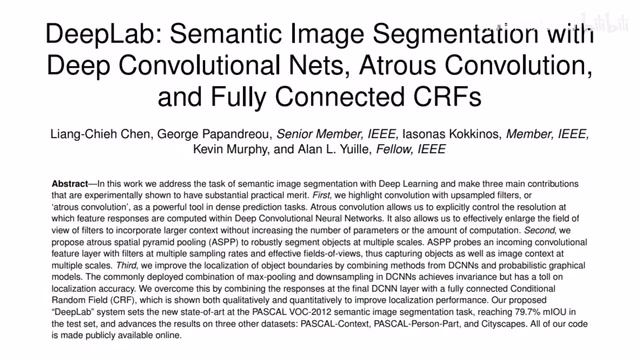
00:00:00–00:00:25 · 画面 001大家好,今天我们来介绍 DeepLab,Semantic Image Segmentation with Deep Convolutional Nets,Atrous Convolution and Fully Connected CRFs。那么这篇论文是 DeepLab 的 V2 的版本了。V1 因为它里面的技术细节在这篇论文中都包括了,所以我们就跳过不再介绍了。这也标志着我们会在未来把 DeepLab V3 和 V3 Plus 一起都介绍一下。在今天视频中,我们还是从作者的 intuition 讲起。
00:00:25–00:00:39 · 画面 002
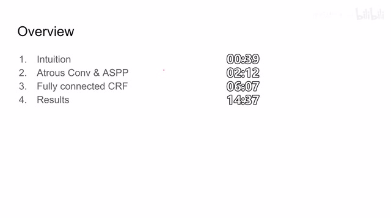
00:00:25–00:00:39 · 画面 002然后呢讲一下这个 Atrous convolution 和这个 SPP 然后呢是这个 Fully Connected CRF 最后呢是作者汇报了一些结果那么首先早在 DeepLab 的这个年代呢我们的这个 Convolution Network 呢长的呢就是这个样子你可以看到呢随着我们 Channel 数量的增加网络呢变宽它的这个 Special 的这个它的 Spatial Resolution 也就是空间尺度上它的这个大小呢是在逐渐缩小的
00:00:39–00:02:12 · 画面 003
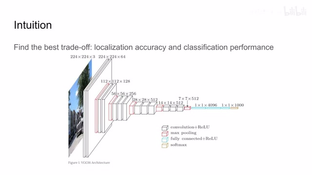
00:00:39–00:02:12 · 画面 003那么这种结构对于像分类这样的任务是 OK 的毕竟最后我们只要输出一串概率就可以了但是对于 Semantic Segmentation 的问题它就牵涉到你的如果 Spatial Resolution 比较低的话那你通过生产样得到的图像它肯定是不是那么精细的注意本文提出的年代是 ResNet 刚提出只有 FCN 的时候那个时候还没有 UNet 所以作者就说我们这里的任务是要找的一个 Best Tradeoff 就是在 Localization Accuracy也就是我们的 spatial resolution 上和 classification performance 也就是对每一个像素的预测的性能上来找到一个好的 balance 找到一个好的 trade-off 那么从现在的角度来看为什么我们需要一个更深的卷积网络去才能做到一个好的分类因为对于我们的 convolution 来说它的感受也增加的速度是比较慢的假如说你的 kernel 是 3 第一层你只能注意到一个 3x3 的 patch 再往下它的感受也是逐渐增大了
当你最终到了很深的层次来得到一个能够关联相对全局的这么信息的时候呢你的这个 spatial resolution 就变得非常小了所以呢为了克服这样的困难呢作者呢在这里对 convolution 进行了改进那么本文的核心贡献呢就是这个 atrous convolution，atrous 这个词呢在英文里面呢是很黑像煤一样黑这样的一个意思但是呢这里取的是他的这个法语的意思表示动的意思
00:02:12–00:02:36 · 画面 004
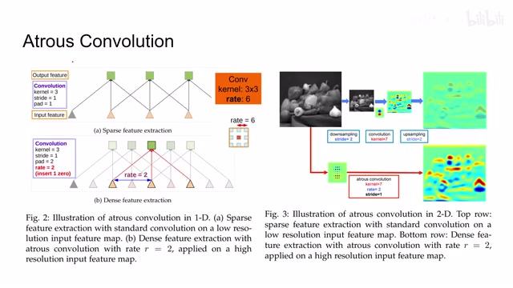
00:02:12–00:02:36 · 画面 004很快你就知道它为什么起这个名额了那么看到这里呢是一个标准的一个 convolution 的结构对 convolution 来说呢就是你的 kernel 相对于这个整个的 sequence 比方说 feature 呢给它一路滑过去假如说这里你的 kernel size 是 3 那你每次计算的时候都会取相邻的三个像素作为我们的 kernel 的计算的输入这个呢是传统的 convolution
00:02:36–00:02:37 · 画面 005
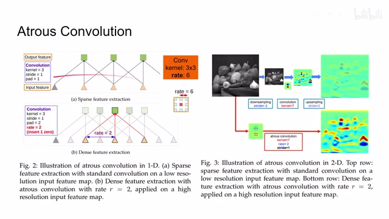
00:02:36–00:02:37 · 画面 00500:02:37–00:02:49 · 画面 006
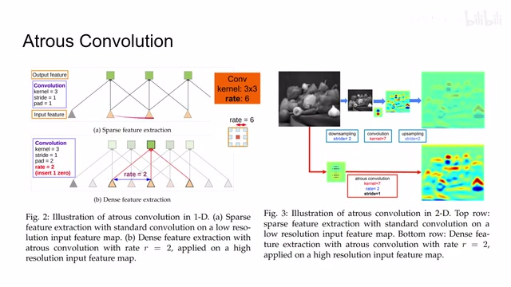
00:02:37–00:02:49 · 画面 00600:02:49–00:02:53 · 画面 007
00:02:49–00:02:53 · 画面 007本文提出的 Atrous convolution 就是我增加一个 parameter 叫做 rate 它相当于在我们的 kernel 上加了一个 strand 虽然我们 kernel 的尺寸还是 3 但是我们输入进 kernel 的元素它们之间的距离变成了 2 也就是说原来我是相邻的三个元素扔到 convolution 里面现在我这三个元素里面中间做了一个间隔中间形成了空洞那么这个就是 Atrous 的意思当然这个图它是一个一维的表达我们看到二维里面
00:02:53–00:03:17 · 画面 008
00:02:53–00:03:17 · 画面 00800:03:17–00:03:19 · 画面 009
00:03:17–00:03:19 · 画面 00900:03:19–00:04:10 · 画面 010
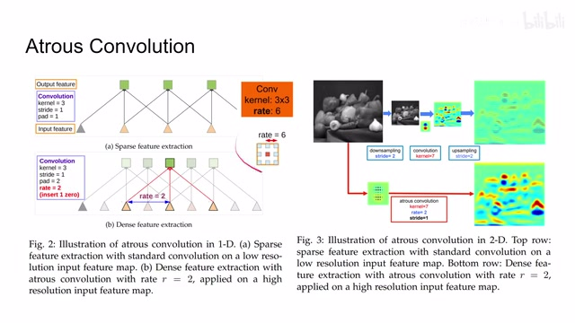
00:03:19–00:04:10 · 画面 010假设这是一个 3 乘 3 的 kernel 那么我们可以看到我们一共取了 9 个像素来计算我们的 output 它的 rate 是 6 这就意味着这两个像素之间它们的距离是 6 也就是说它们中间间隔着 5 个其他的不相关的像素这 5 个像素是被我们忽略掉那么这样做的好处是显而易见的相比于计算这个 13 乘 13 这么一个尺寸的一个 kernel 我现在只需要计算这个 3 乘 3 的数量就能够覆盖相同的感受引对比一下其他的方法你先进行降采样过 convolution 再进行生采样这样得到的结果呢不如我直接做一个 atrous convolution 就能够直接跳过降采样和生采样的步骤输出一个这个图像的高分辨率的这样一个 convolution 的结果那么具体落实的 atrous convolution 它的实现呢这里呢我们有两种途径第一种呢很直观的就是反正既然我们是一个 3x3 的 kernel 嘛
00:04:10–00:05:26 · 画面 011
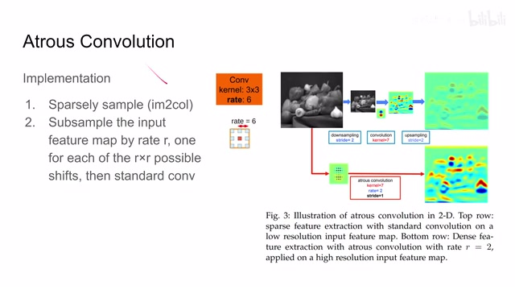
00:04:10–00:05:26 · 画面 011我们直接把这 9 个像素的值取出来，来直接做 convolution 就可以了。这个呢是一个早期的实现。那么后来呢我们意识到 convolution 呢在我们的硬件中的优化是非常好的，它的计算速度是很快的。那么为了利用这一点优势呢，我们呢把这个图像按照 rate 直接做这个降残样，比如说这里的 rate6，那我就是把我原始的图像呢直接间隔 6 个像素这样降残样，降残样之后的图像呢再送到 convolution 里面这样子呢就能够利用到我们系统中对考读室的优化了。但是这样带来一个问题就是我进行一次降采样它是不够的，我们假如说这个长度是 6，我们需要进行 6x6 的降采样，每次呢都是从稍微偏移这样一点来开始做降采样，所有的这些采完之后再过考读室。那么这个呢是现在他们在这个 TensorFlow 里面的实现
所以 Atrous convolution 的核心就是我通过调整这个 rate 使我在计算相对少数量的 kernel 的情况下能够随意的改变它的这个 fov 也就是感受野的尺寸那么然后我们看到本文的第二个地质点也就是 V2 区别于 V1 的地方就是这个 Atrous spatial pyramid pooling 之前我们提到这个 Atrous convolution 它可以根据我们的需要去调整 fov 的尺寸
00:05:26–00:05:45 · 画面 012
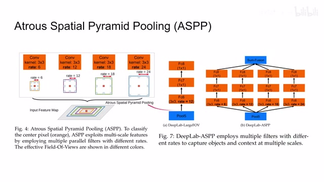
00:05:26–00:05:45 · 画面 012那么具体哪个尺寸才是合适呢不得不再说一次小孩子才做选择大人呢都是我全都要这里可以看到作者使用了不同的 rate 去做这个 Atrous convolution 那么相对于原来的传统呢只有一个的这个 path 的这种方法呢反正这个 spatial pyramid pooling 呢它是把我们输入结果呢送到四个不同的 path 里面每一个呢有不同的 rate 然后最后得到的结果呢再给它最后加起来
00:05:45–00:05:46 · 画面 013
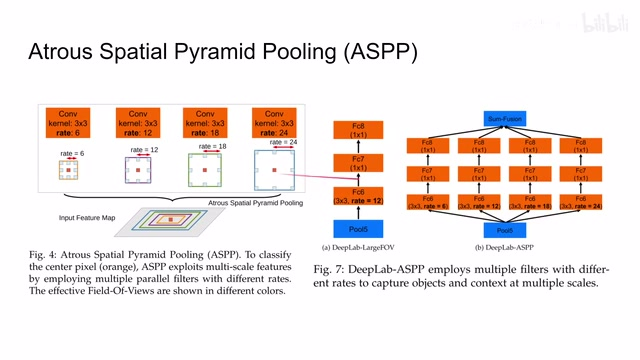
00:05:45–00:05:46 · 画面 01300:05:46–00:05:51 · 画面 014
00:05:46–00:05:51 · 画面 01400:05:51–00:05:52 · 画面 015
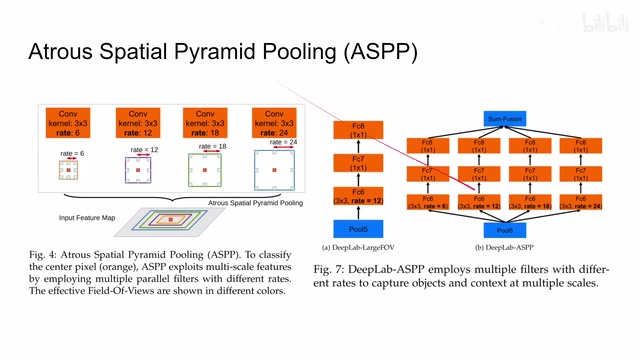
00:05:51–00:05:52 · 画面 01500:05:52–00:05:56 · 画面 016
00:05:52–00:05:56 · 画面 01600:05:56–00:06:05 · 画面 017
00:05:56–00:06:05 · 画面 017那么这样子就兼顾了不同尺度的信息那么以上就是 DeepLab 系列的核心的思想那么除此之外本文为了提高模型的性能还增加了 Fully Connected CRF 也就是 Conditional Random Field 条件随机场它的引入其实就像我们在做 classification 里面的 bounding box regression 一样是在网络输出之后做一个后处理帮助我们的结果更加精确
00:06:05–00:06:08 · 画面 018
00:06:05–00:06:08 · 画面 01800:06:08–00:07:13 · 画面 019
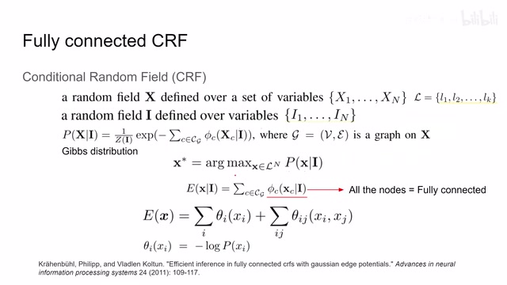
00:06:08–00:07:13 · 画面 019那么这里我们就简单介绍一下条件随机场的概念，因为它也不是一个新东西，但是更详细的介绍欢迎你去看这篇论文，它里面有更多详细的数学的推导，包括它的高效的实现，这里我们就不作为重点来设计了，因为这个模块在 DeepLab V3 之后也被拿掉了。那么首先我们来看条件随机场，假设我们有 n 个随机变量，从 x1 到 xn。那么这 n 个随机分量组成的集合呢，就叫做一个随机场。这里呢我们把这个 x 呢当做可能的这个 Symmetric Labels，也就是它可能是什么样的语义信息。这个 Label 呢有 k 个，从 l1 到 lk，它组成一个集合。那么随后呢我们又有一个条件随机场 i，这个 i 呢也是有 n 个，从 i1 到 in。那么它在本文中呢我们认为是图像的原始的采测信息，也就是图像的像素
00:07:13–00:07:19 · 画面 020
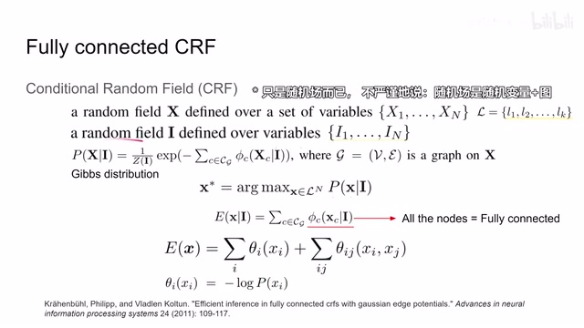
00:07:13–00:07:19 · 画面 02000:07:19–00:08:14 · 画面 021
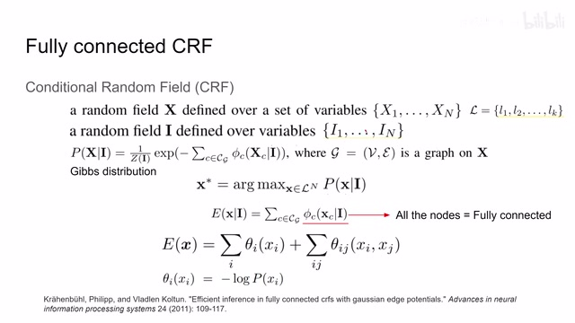
00:07:19–00:08:14 · 画面 021当然我们希望一个萝卜一个坑，一个像素它对应一个 label，所以它的长度也是 n。那么所谓条件随机场就是我这个 label 它不是乱预测，它是要根据 i 它输入的图像来预测，所以这里我们计算的是 given i x 它的概率，这个 i 这里就是我们的 condition。这里我们使用这个概率分布，它是一个 gibbs distribution 或者你叫它 Boltzmann distribution。
那么它呢，你可以看到它呢，是一个 energy based，也就是说，我这个概率呢，是正比一个 me，你看到这是一个 me，然后呢，这个 me 的指数呢，是一个能量的一个值取了这个相反数，那么这个能量的计算呢，就牵扯到了不止说我这一个随机变量，而包括这个随机变量它的临接，也就是假如说我在计算 x1 的时候，我要考虑 x2 它贡献的能量，x3 它贡献的能量，等等等等。
00:08:14–00:08:15 · 画面 022
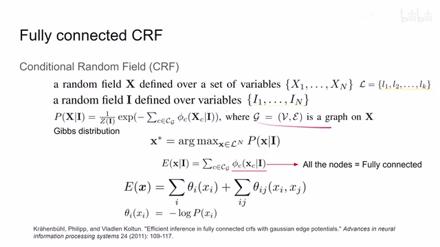
00:08:14–00:08:15 · 画面 02200:08:15–00:10:13 · 画面 023
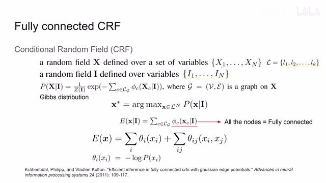
00:08:15–00:10:13 · 画面 023也就是与 x1 相临接的这样一个能量呢，它的和，这个呢，就是场的意义，也就是说，每一个节点之间呢，它们是有相互的关联，那么当然我们的目的呢，是找到一个 x 使我们这个 given i 与到 x 它的概率呢是最大的，也就是一个极大的后延概率，那么为了取到它最大它是长的这个样子的，我们就希望把它里面这个值呢给它尽量的缩小，那么这个值呢，就是我们的 energy 方式。
它呢，写成了这个样子，那么在我们图像的场合，每一个 I 呢，是一个像素，那么 XC 呢，是对应像素上的 label，那传统的这个 CRF 呢，它可能就只计算相邻呢，比如说 40 阶或者 80 阶它来得到这个能量，但是本文呢，其实是这篇论文啊，我的每一个像素呢，跟其他所有的像素都有所关联。也就是说，计算这一个节点和其他所有节点的它们相互之间的这个 potential 这个 energy，然后把它加起来，那么因为它是计算所有的节点，所以它叫 fully connected，那么下面我们继续来看这个函数它是怎么实现的，那么它这个函数在打开里面包括了两部分，第一个首先你发现是指针对 xi 的它自己的，那么第二项是它自己跟它的连接的，那么再继续来看关于它自己这一项，它自己这一项。
它写成的是这样一个形式，其中呢，这个 p 呢，是我们的 classifier 对这一个像素它取得 xi 这个 label 给出的得分嘛，付到个 p 这样的一个形式呢，就是你的得分越高，整个的这个 theta 这个项目呢，它的值呢就越低，所以呢，这一项呢，就是在鼓励我们的 classifier 对当前输出的结果呢，要越来越自信。
那么随后呢，我们再看这个像素和其他周围像素之间相互计算距离的这样一个关系，那么这里呢，我们看到它呢，显示了这样一个形式，首先呢，这个μ它的定义呢，是只有 si 和 xj 不相同的时候，那么它才有一个值。
00:10:13–00:10:51 · 画面 024
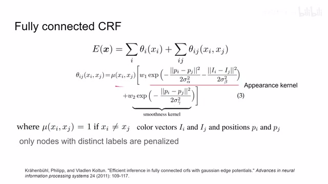
00:10:13–00:10:51 · 画面 024也就是说呢，当 Si 和 Sj 这两个 label 它们不相同的时候，我们才开始计算它们之间是否有一些代价，它们是否需要被惩罚，那么随后我们再看假如它们两个确实是不同的 label，我们要该怎么样计算它们之间的 penalty 呢，或者叫 potential 呢，或者叫 energy 呢，这里呢，有一个表达式，那首先第一项这个 P 呢，表示这两个 label 它们的位置，这个 I 呢，表示这个 label 原始的这个像素值吧，那这里我们看到如果我们希望这个项目缩小的话。
00:10:51–00:10:52 · 画面 025
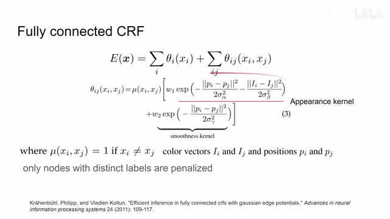
00:10:51–00:10:52 · 画面 02500:10:52–00:11:37 · 画面 026
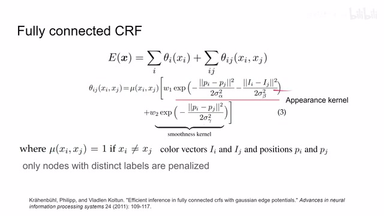
00:10:52–00:11:37 · 画面 026那么这里面的值呢，就必须尽可能的大，如果说你的模型想要告诉我 XI 和 XJ 这两个点它是属于不同的 label，那这两个点最好首先第一它们离的比较远，第二呢，它们的像素的值它们的颜色的差别尽可能的大，那这个第一项呢，就是作者称为的 appearance kernel，它的权容呢，是 W1，那么再看第二项，第二项就是单纯的说，如果这两个 label 不同的话，那么它们最好离的足够远。
那换句话说就是，离得近的像素你们最好 label 是比较一样的，不然你的 penalty 会很大，那么所以呢，这一项呢，我们称之为 smoothness curve，当然我们可以通过调节这些方差来调整每一项们它的力度，那么这样呢，我们就把整个这个 energy 方式给它构建起来了，我们只需要最小化这个 energy 就可以了，那么这个时候呢，我可能有朋友就意识到了，那我的一个图像里面有这么多像素。
00:11:37–00:11:38 · 画面 027
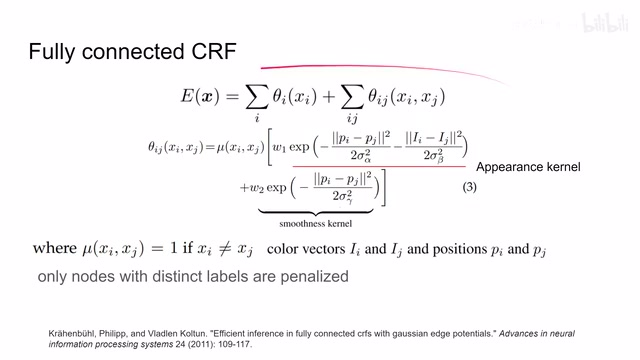
00:11:37–00:11:38 · 画面 02700:11:38–00:11:56 · 画面 028
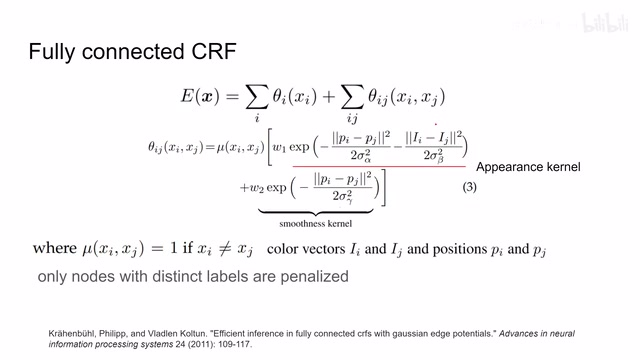
00:11:38–00:11:56 · 画面 028每一个像素在计算 CRF 的时候都要和其他所有像素来进行关联，这个计算量是不是太过巨大了？我们当然不会采用这么暴力的方法，可以说 Mean-field approximation，也就是说我们用另外一个 distribution 去近似 p 近似，就是我们这两个 KL divergence 给它缩小。那么你可以看到它的算法流程是这个样子，你不断迭代就可以使 q 逼近 p，其中最耗时就是 message passing 环节。
00:11:56–00:12:09 · 画面 029
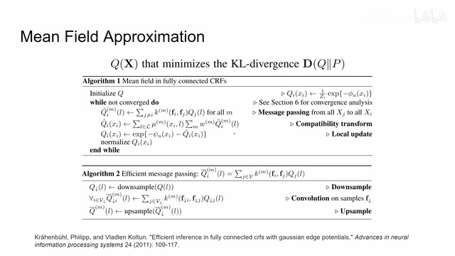
00:11:56–00:12:09 · 画面 02900:12:09–00:12:10 · 画面 030
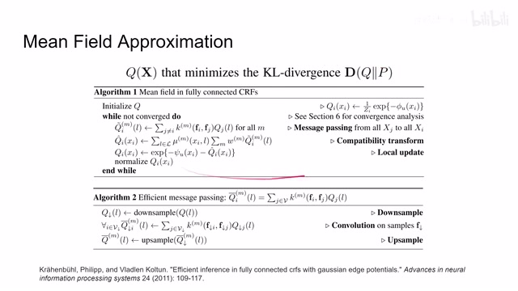
00:12:09–00:12:10 · 画面 03000:12:10–00:12:36 · 画面 031
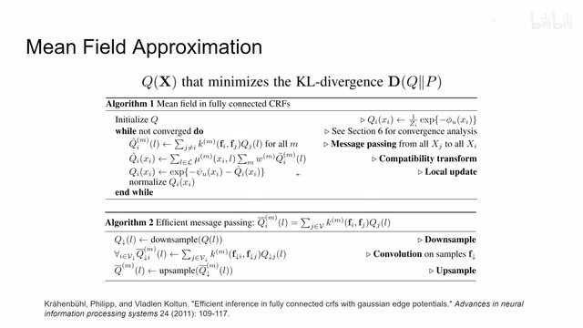
00:12:10–00:12:36 · 画面 031但是因为之前我们使用的 anergy 它都是形如高深地随标深的这样的一条系统所以在这里它可以被很高效的计算这里我们不会涉及具体它的算法的原理这些计算到底有什么意思如果你感兴趣可以去这篇论文里面查看 DeepLab 就是把这里面的实践拿过来使用了这里我们需要有个概念就是随着它的不断的迭代它把原始的输入
00:12:36–00:12:37 · 画面 032
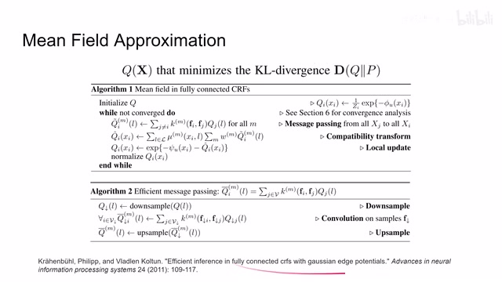
00:12:36–00:12:37 · 画面 03200:12:37–00:12:39 · 画面 033
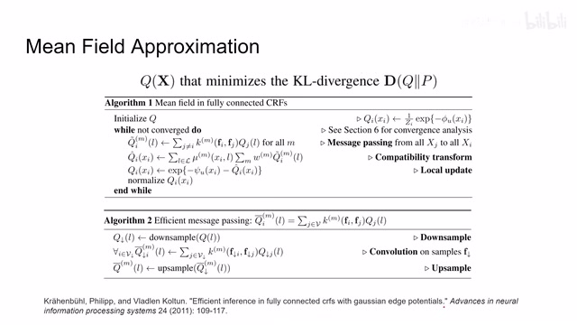
00:12:37–00:12:39 · 画面 03300:12:39–00:13:08 · 画面 034
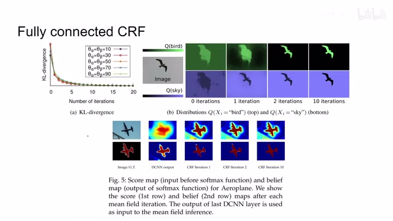
00:12:39–00:13:08 · 画面 034看起来并不是非常好的这么一个结果，通过不断的迭代来改善它的边缘的性能，包括这个也是它原始的输出是长这个样子，经过不断的迭代，最终它的边缘的质量就比较接近 Ground Truth。那么以上就是这篇论文主要的技术要点，本文的工作主要还是 Atrous convolution，我们最后来回顾一下论文的结构。
00:13:08–00:14:37 · 画面 035
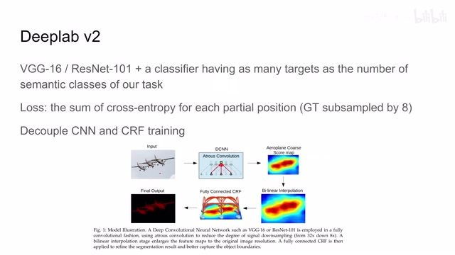
00:13:08–00:14:37 · 画面 035这里作者用 VGG16 或者 ResNet101 它做了一个 backbone，然后把后面的最后的 classification head 换成了一个 convolutional classifier，这样它能输出的就是一层层的 channel，而 channel 的数量跟我们的整个 Semantics label 它的数量是相同的。
那关于 loss 的选择呢，这里呢作为使用的是 cross entropy，也就是说对于每个像素来说呢，我们都可以把它理解为是一个多分类问题，而对于多分类问题呢，我们就是一个 cross entropy loss。那么同时应该注意的是呢，因为我们的这个前面这个网络它的层次很高了，它的 spatial resolution 呢就相对比较低了，那么我们再积累一个 convolution 之后呢，它尺寸呢是 Ground Truth 的八分之一。
那么最后呢就是这个 decoupled，也就是我在训练 CNN 和训练这个 CRF 的时候呢，它们是并不相互关联的。这里呢我们可以看到作者提供了流程，那首先是输入过我们的 CNN，它里面包括这个 Atrous convolution，其实也就是在前面 VGG 完了之后，这个 ResNet 完了之后，最后的一层给它换成了这个 Atrous convolution，然后做了得到这个 score map，在这一步训练的时候呢，我们用这个 cross entropy 来训练。
那么随后呢这个 ScoreMath 呢在这个新型插谱到原来的大小过这个 Fully Connected CRF 那得到最终的输出的结果那么我们直接来看作者汇报的结果吧首先呢作者帮我们探讨了使用多大的 FLV 合适也就是最后一层的这个 Artifacts Condition 它的这个 Rate 所以这里呢作者测试的模型呢是没有那个 ASPP 的也就是说呢我只有一种 FLV 那得到的结果呢
00:14:37–00:15:39 · 画面 036
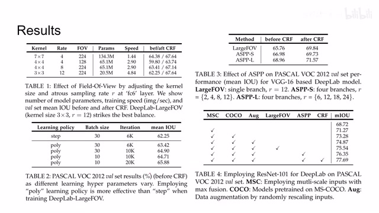
00:14:37–00:15:39 · 画面 036那么最后呢作者选择了这样一个配置作为最好的这么一个结果那么此外呢作者还测试了像这个 learning rate 使用不同的 schedule 呢能得到不同的结果那么随后呢作者对比了像这个使用 CRF 之前和使用 CRF 之后性能的提升呢是非常明显的然后呢我们最后一层是使用这个 FOV 还是使用 SPP 就是不同尺度的考读者他们的组合嘛得到的结果肯定 ASPP 的质量是更好的，你可以看到这两个配置它们的每个 branch 里面的 rate 这个的 rate 相对比较大一点。那么随后作者还做了像 ResNet101 上面做一些消融实验，比如说 pre-trainingdata augmentation 还有这些东西得到效果，随后就是一些美好的数字在 PASCAL VOC 上面 outperform 之前的一些方法，这里换到 PASCAL Context 这个数据集上也是 outperform 之前这些方法。
00:15:39–00:15:51 · 画面 037
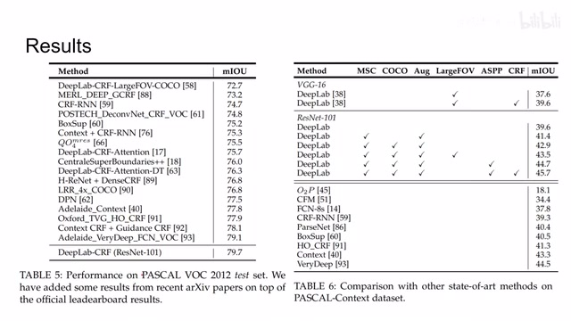
00:15:39–00:15:51 · 画面 03700:15:51–00:16:27 · 画面 038
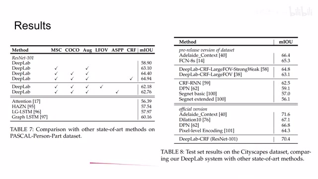
00:15:51–00:16:27 · 画面 038那么还有像其他一些数据集呢，感兴趣的朋友呢，欢迎去原文的查看。那么总的来说呢，DeepLab V1 它的核心的贡献呢，就是这个 Atrous Convolution。那么 V2 呢，加上这个 SPP 这样一个结构，能够使用的模型注意到不同尺度的这个特征。那么同时呢，在 V1 中就引入了这个 Fully Connected CRF，显著的改善了这个模型的输出的质量。在我们的模型不是非常强的时候，加一个后处理是当时一个比较通用的做法。
好的，那么以上就是我对这篇论文的简单分析。后面我们会介绍 DeepLab V3 和 V3 Plus。那么感谢您的收看，再见。
00:16:27–00:16:27 · 画面 039
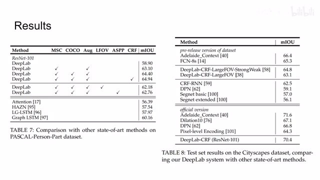
00:16:27–00:16:27 · 画面 039转写与来源说明 · 0 个自动复核提示
保留 37 个原始语音片段，0 个片段触发自动复核提示。提示仅用于定位可能的术语、重复或识别问题，不等于已确认错误。
讲解画面为源视频截图（640×360），不是可编辑 PPT 文件。全片按每秒 2 帧扫描内容变化，逐步展开页保留；连续动画保留代表画面。清晰度受源视频限制。
原视频：paper/合集_2026-10-16_新模型/[论文简析]DeepLab Semantic Image Segmentation with DCN..[1606.00915].mp4
SHA-256：76c834cd1bbd6e795ae2706a6870ee63694e5b12fb8bf6e7b20f2c9a8abd6edd
全文按视频语音与画面制作。原论文可从上方链接下载；完整资料包保留全文、原始逐字稿、字幕和校对记录。